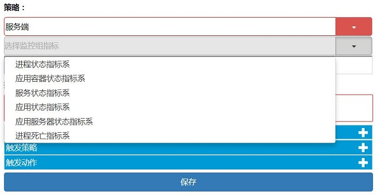
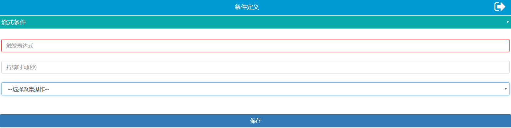
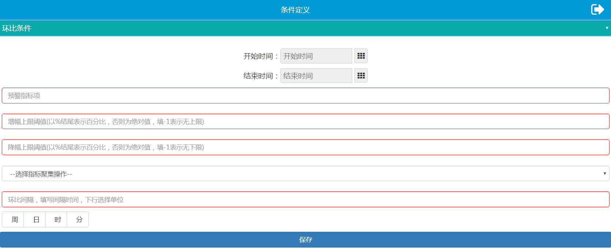
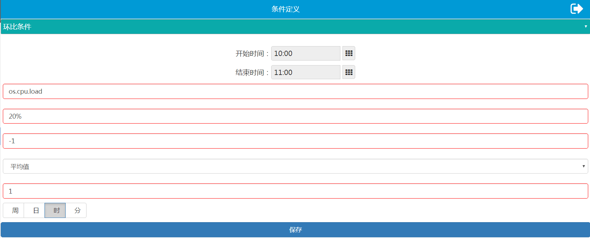
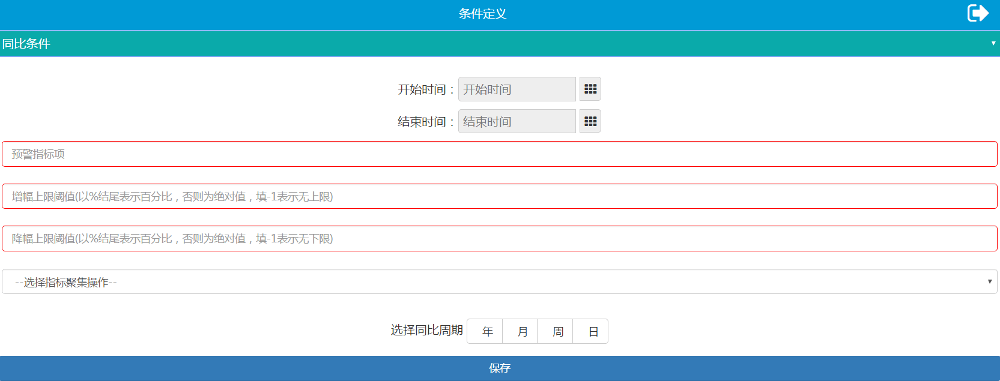
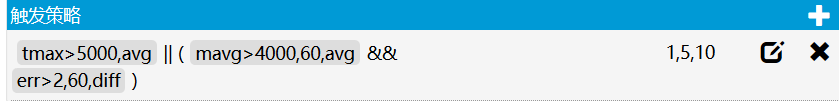

Alarm
UAV sends alarm notifications for all monitoring metrics and supports simple expressions to set alarm strategies for monitoring metrics. After alarm strategies are triggered, alarm notifications shall be sent via mail, SMS, HTTP interface and thread analysis.
Alarm Strategy Configuration
Access the UAV GodEye interface and click on [Alarm Strategy Management] on the left side bar to get to the alarm strategy list view interface.
Alarm Strategy List View

1. Alarm Strategy Creation Button
Click to get to the alarm strategy creation interface.
2. Query Box
Enter keywords to start query. End the keywords with "*” for fuzzy match.
3. Query Button
Click to start query.
4. Show-All Button
Click to display all alarm strategies.
5. Overview Bar of Alarm Strategies
Click on any area in the bar to view alarm strategy details (if the strategy was configured by the current viewer, then the viewer shall get to the modification interface). Strategy: strategy basics. The first cell shows the type of strategies. The second cell shows the type of monitoring metrics. The third cell shows the application instance or the application instance group to which the strategy is applied. Description: strategy description. Owner: the user who configured the strategy. The owner has the permission to view, modify and delete self-configured strategies, and the permission to view strategies set by others. Modification time: the time of the latest modification.
6. Delete Button
Click on  to delete strategies. Be noted that this operation is not undoable.
to delete strategies. Be noted that this operation is not undoable.
Create
Click on the alarm strategy creation button on the alarm strategy list view page to get to the [Add Strategy] interface. Click on  in the top right corner of the [Add Strateegy] interface to open Help Documentation on Alarm Strategy Configuration. Click on
in the top right corner of the [Add Strateegy] interface to open Help Documentation on Alarm Strategy Configuration. Click on  to return back to the alarm strategy list view page.
to return back to the alarm strategy list view page.

1. Select a Monitoring Group
Click on the icon at 1 to open the drop-down box as shown below. Select a monitoring group.

2. Select a Metric System for the Monitoring Group
After the monitoring group is selected, a bar of metric system for the monitoring group would pop up. Click on the button on the right side to open the drop-down box as shown below. Select a metric system for the monitoring group.

3. Enter the Name of an Application Instance or the Name of an Application Instance Group
Enter the name of an application instance; or enter the name of an application instance group if there is more than one application instance, and then enter the names of application instances in the following bar. Fill in the names of application instances as below.
| Name of monitoring metric system | Name of application instance | Example |
|---|---|---|
| Custom metric | Server address | http: //10.143.129.64 : 8080 or jse: //10.120.68.73/com.alibaba.rocketmq.namesrv.NamesrvStartup-8902 |
| Metric system for process status | IP_Process name or IP | 10.100.33.136_java |
| Metric system for container status | Specific IP | 10.100.33.136 |
| Metric system for service status | URL address for specific address or upper level address | http: //10.143.129.64 : 8080/isign/isign/signPDF |
| Metric system for application status | Application address | http: //10.143.129.64 : 8080/isign |
| Metric system for application server status | Application address | http: //10.143.129.64 : 8080/isign |
| Metric system for process death | Specific IP | 10.100.33.136 |
| Metric system for invocation status | Server ip: port#name of application instance#type of invocation service(Redis, Http, Mongo and MySQL, etc.)://ip of invocation service: port | 10.100.30.73:9090#smsmanager#redis://10.100.30.73:6379 |
| Metric for logs | Location of log files | /app/t7-ccsp/logs/ccsp.log |
4. Enter the Name of Application Instance
Skip this step if the name of application instance was entered in Step 3. Enter the names of application instances and separate the names with “,” if the name of application instance group was entered in Step 3.
5. Enter the Description
Enter custom description of the strategy.
6. Add Condition Definitions
Alarm conditions of all strategies should be defined unless the process is dead. Click on to add condition definitions as shown below.

Click to choose among Streaming Alarm Condition, Alarm Condition based on Sequential Comparison and Alarm Condition based on YoY Comparison.
Streaming Alarm Condition

- Fill in the triggering expression in the first bar in the format of [name of monitoring metric](71.md)][comparison operator][value]. Examples of comparison operators include < , >, and =. Here is an expression instance: os.cpu.load>90. The name of the monitoring metric group shall follow the corresponding monitoring name. Refer to Monitoring Metric Illustration for the correspondence between the name of the monotoring metric group and the name of the metric.
- Fill in the duration in the second bar, which indicates the time span (in seconds) for strategy judgement. (May be left blank, indicating that the alarm shall be triggered when the condition prescribed by the expression is met).
- Select an aggregate operation in the third bar, representing the aggregate operation done to the parameter value within the duration.
Below is an instance of streaming alarm condition, indicating that the mean value of os.cpu.load(occupancy rate of CPU of container) within 1 minute is greater than 90.

Sequential Comparison and YoY Comparison
Both are used to compare the growth of / decline in statistics, i.e. the comparison between statistics of a recent period and those of the period preceding it (base period), both periods being of the same length. YoY comparison shows changes in statistics of the current period from those of the same period last year, such as the comparison between statistics of April this year and those of April last year, or the comparison between statistics from 8:00 to 9:00 today and those from 8:00 to 9:00 yesterday. Sequential comparison shows changes in statistics of the current period from those of the prior period, such as the comparison between statistics of April this year and those of March this year, or the comparison between statistics from 8:00 to 9:00 today and those from 7:00 to 8:00 today.
Alarm Condition based on Sequential Comparison

- Determine the time range for sequential comparison
- Set the incremental time interval within 24 hours for sequential comparison.
- Set the effective time range, including the date range, the time range and the workday range. The alarm condition based on sequential comparison is effective between the start time and the end time on the specified workday from the start date to the end date. Date and time are optional. All workdays are selected by default.
- Fill in the alarm metric with reference to name of monitoring metric. Unlike streaming alarm conditions, alarm conditions based on sequential comparison and YoY comparison allow for names of monitoring metrics in other metric systems. Plaese refer to Cross Metric-System Alarm Conditions.
- Set the upper threshold for sequential growth in the second bar. The alarm strategy shall be triggered if the sequential growth is greater than the upper threshold. Enter percentage or absolute figure. * indicates no upper threshold. Upper threshold beginning with # indicate comparison with the following figure. For instance, #5 indicates that the aggregate value within the time range is greater than 5.
- Set the upper threshold for sequential decline. The alarm strategy shall be triggered if the sequential decline is greater than the upper threshold. Enter percentage or absolute figure. * indicates no upper threshold. Upper threshold beginning with # indicate comparison with the following figure. For instance, #5 indicates that the aggregate value within the time range is smaller than 5.
- Select an aggregate operation in the fourth bar, representing the aggregate operation (mean value by default) done to the parameter value within the time range.
- Select an aggregation operation in the fifth bar, representing the aggregate operation (mean value by default) done to the aggregate results of the alarm metric in the first bar for multiple instances.
- Fill in the time interval for sequential comparison in the sixth bar, i.e. the time span between the current period and the prior period. Select a unit for the time interval in the next bar.
Below is an example of the alarm condition based on sequential comparison. In the example, the base period is 10:00-11:00; the time interval for sequential comparison is 1 hour; the alarm metric is the sequential growth of the mean value of os.cpu.load(use rate of CPU of container); and the upper threshold of sequential growth is set to be 20%. The effective duration of this condition is 8:00 to 20:00 on workdays from April 1, 2018 to April 1, 2019. This alarm condition shall be performed once every hour and the alarm decision shall be made based on the sequential comparison between the statistics of the current period and those of the prior period 1 hour (time interval for sequential comparison) ago. For instance, the mean value of CPU use rates is 60 from 10:00 to 11:00 and 40 from 9:00 to 10:00. The sequential growth is (60-40)/40=50%, greater than the upper threshold 20%. The alarm strategy shall thus be triggered.

Alarm Condition based on YoY Comparison

- Determine the time range for YoY comparison
- Set the incremental time interval within 24 hours for sequential comparison.
- Set the effective time range, including the date range, the time range and the workday range. The alarm condition based on YoY comparison is effective between the start time and the end time on the specified workday from the start date to the end date. Date and time are optional. All workdays are selected by default.
- Fill in the alarm metric with reference to name of monitoring metric. Unlike streaming alarm conditions, alarm conditions based on sequential comparison and YoY comparison allow for names of monitoring metrics in other metric systems. Plaese refer to cross-metric-system alarm conditions.
- Set the upper threshold for YoY growth in the second bar. The alarm action shall be triggered if the YoY growth is greater than the upper threshold. Enter percentage or absolute figure. * indicates no upper threshold. Upper threshold beginning with # indicate comparison with the following figure. For instance, #5 indicates that the aggregate value within the time range is greater than 5.
- Set the upper threshold for YoY decline. The alarm action shall be triggered if the YoY decline is greater than the upper threshold. Enter percentage or absolute figure. * indicates no upper threshold. Upper threshold beginning with # indicate comparison with the following figure. For instance, #5 indicates that the aggregate value within the time range is smaller than 5.
- Select an aggregate operation in the fourth bar, representing the aggregate operation (mean value by default) done to the parameter value within the time range.
- Select an aggregation operation in the fifth bar, representing the aggregate operation (mean value by default) done to the aggregate results of the alarm metric in the first bar for multiple instances.
- Select a time unit for YoY comparison. For instance, if the the time unit is week, then the time period every day this week shall be compared to the same period of the previous week.
Below is an example of the alarm condition based on YoY comparison. In the example, the base period is 8:30-9:30; the time interval for YoY comparison is 1 week; the alarm metric is the YoY growth of the mean value of os.cpu.load(the use rate of CPU of container); and both the upper and lower thresholds of YoY growth for alarm are set to be 20. The effective duration of this condition is workdays from April 1, 2018 to April 1, 2019. This alarm condition performs YoY comparison between the statistics from 8:30 to 9:30 of each day this week and those from 8:30 to 9:30 of the same day last week to make alarm decisions. For instance, the mean values of CPU use rates from 8:30 to 9:30 on Monday this week and last week are 20 and 50 respectively. The YoY decline is 50-20=30, greater than the upper threshold 20. The alarm strategy shall thus be triggered.

Cross Metric-System Alarm Conditions
Alarm conditions based on sequential comparison and YoY comparison are not limited by monitoring metric systems and allow for cross metric-system alarm condition configuration. Add the prefix of other metric systems when filling the metric names that do not belong to this metric system. For instance, appResp is the prefix of appReso.tavg, representing the average response time of this metric. Please refer to Monitoring Metric Illustration for prefixes of monitoring metric systems and the correspondence between monitoring metric systems and monitoring metric names. Configurable monitoring metric systems are restricted by the monitoring metric systems of alarm strategies. Please refer to the table below for details.
| Metric system of alarm strategy | Additional metric systems configurable to alarm conditions based on sequential comparison and YoY comparison |
|---|---|
| Metric system of invocation status | Metric system of application status (appResp), metric system of application server status (serverResp), custom metric system (jvm) and metric system of container status (hostState) |
| Metric system of service status | Metric system of application status (appResp), metric system of application server status (serverResp), custom metric system (jvm) and metric system of container status (hostState) |
| Metric system of application status | Metric system of application server status (serverResp), custom metric system (jvm) and metric system of container status (hostState) |
| metric system of application server | Custom metric system (jvm) and metric system of container status (hostState) |
| Custom metric | Metric system of application server (serverResp) and metric system of container status (hostState) |
| Metric system of process statud | Metric system of application container (hostState) |
| Metric system of container status | None |
7. Add Triggering Strategy
After the condition definition is added, click on  to add the triggering strategy as shown below.
to add the triggering strategy as shown below.

Click on the expressions of condition definition to add them into the edit box and add (&&)|| to define the logical relationship among the expressions. Edit convergence rules in the second dialog box (optional) by filling in numbers separated by ",", representing that the alarm strategy shall be triggered at the frequency denoted by the numbers. Below is an example.

Click on [Save] and the triggering strategy shall be successfully configured. The gradient convergence rule of an alarm strategy (if any) is displayed on the right of the strategy. 
Below are filtering principles for alarm strategies with gradient convergence rules:
- The alarm strategy with gradient convergence rule shall prevail when configured together with strategies without gradient convergence rules;
- The alarm strategy with a convergence rule of most gradients shall prevail when configured together with multiple alarm strategies with gradient convergence rules.
Below is an example:

In the image above, Strategy 1 is with a gradient convergence rule and Stategy 2 is not. Strategy 1 shall prevail when both strategies are triggered;

In the image above, Strategy 1 is with a convergence rule of least gradients and Strategy 3 is with a convergence rule of most gradients. If only Strategy 1 is triggered, then the prevailing gradient convergence rule is 1,3,5; if both Strategy 1 and Strategy 2 are triggered, then the prevailing gradient convergence rule is 1,3,5,7; if all strategies are triggered, then the prevailing gradient convergence rule is 1,3,5,7,9.
8. Add Triggered Action
Click on to add the triggered action as shown below.

- Select the type of triggered action among mail (requires to congifure items related to email in notifycenter of HM), SMS (not supported by the open source) and HTTP invocation in the first bar.
- Add corresponding alarm notification receiver among mail address, cell phone number and HTTP invocation address in the second bar. Separate multiple receivers with “,”.
Click on [Set Priority] to decide prorities from high to low for multiple alarm receivers.

9. Finish Creating
Click on [Save] to finish creating alarm strategies and get back to the list view interface of alarm strategies.
View
Click on the alarm strategy overview bar to view alarm strategies created by other users.

Click on the icon on the right of the [Condition Definition] bar or the [Triggered Action] bar to view detailed strategy configuration.
Modify
Click on the alarm strategy overview bar to modify self-created alarm strategies.

- Modifiable items include names of application instances, strategy description, condition definition and triggered action.
- Name of application instance & strategy description: modify in the input box directly.
- Condition definition & triggered action: click on to add condition(action); click on
 to modify condition(action); and click on to delete condition(action).
to modify condition(action); and click on to delete condition(action).
Copy
Click on the alarm strategy overview bar of any alarm strategy to be copied and get to the strategy modification/view interface.

Click on the copy button in the top right corner and get to the strategy copy page. Fill in the group name of application instances and names of application instances to which the new alarm strategy applies. Modify condition definitions and triggering strategies that need adjustment. Click on [Save].

Delete
Click on on the right side of the alarm strategy overview bar to delete strategies.